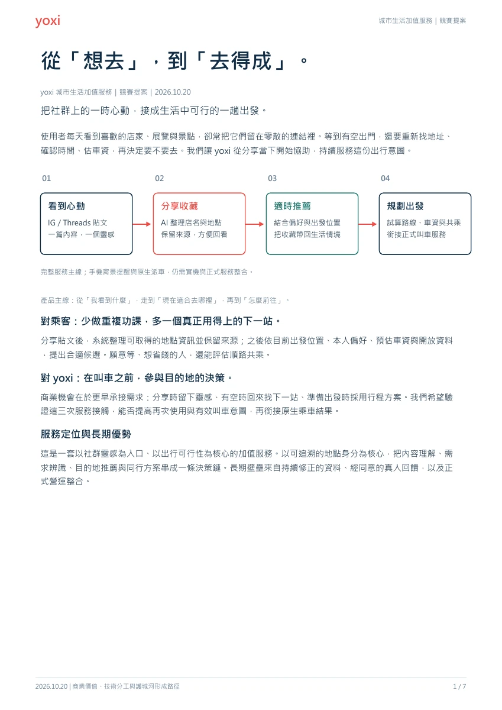
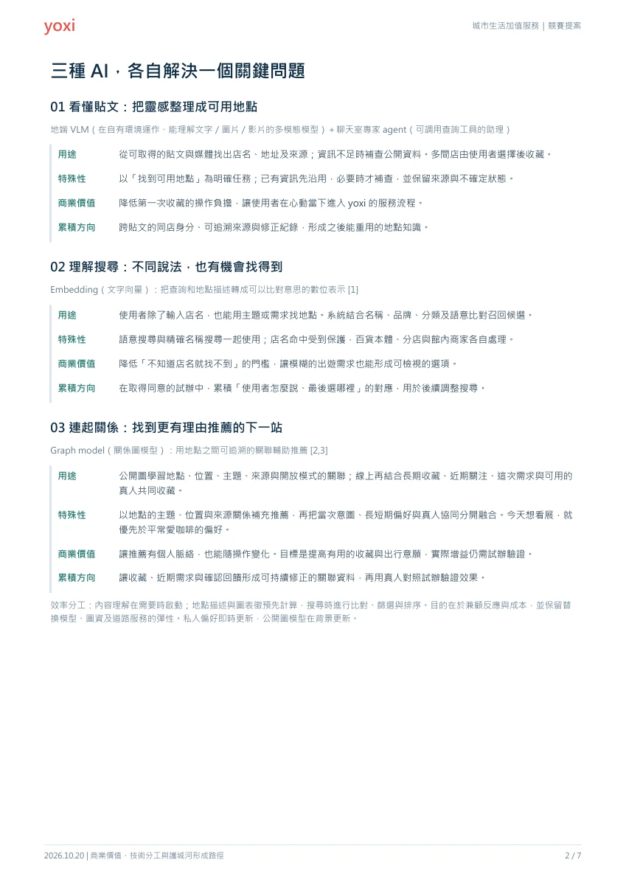
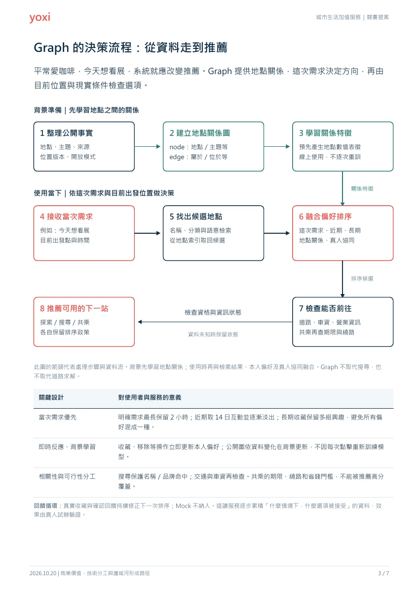
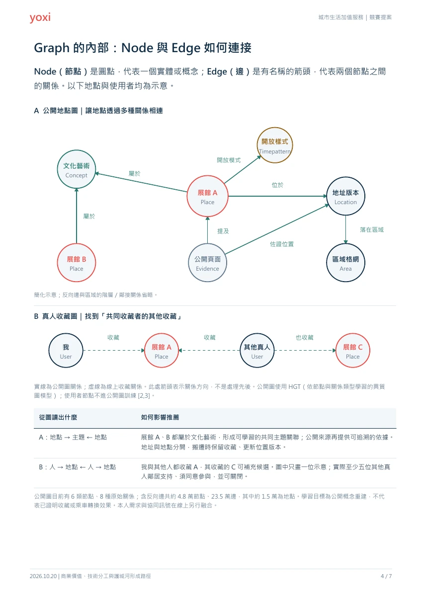
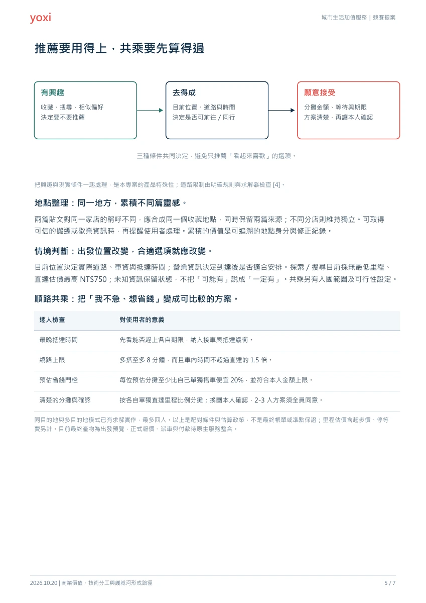
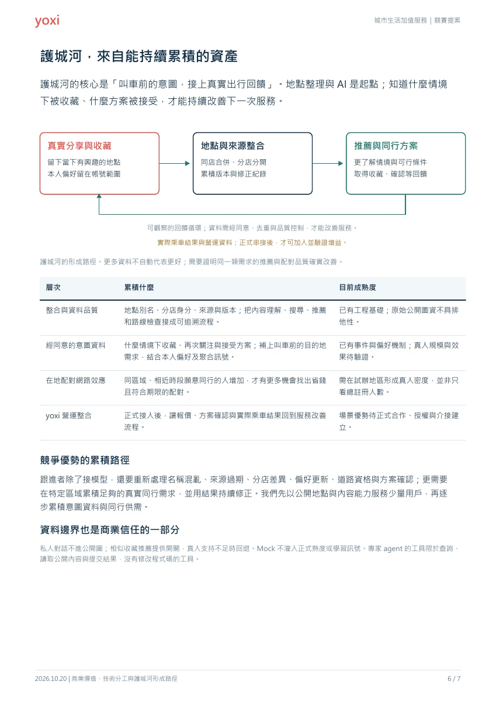
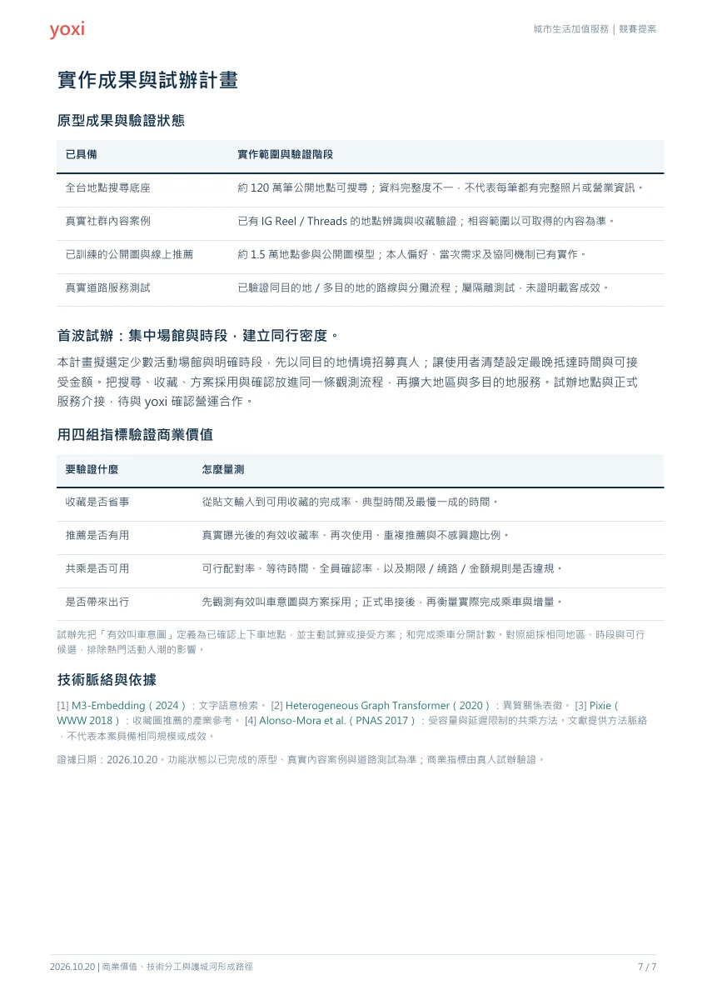

貼文裡的地點，
留下來就能再找到。
整理可取得的 IG／Threads 內容，辨識店名與地址並保留來源。同店合併、分店分開，多間店由使用者選擇。
內容解析與地點整理 →實作與技術補充 · 文件 2026.10.20
把貼文整理成想去的地方，依當下需求推薦，
再把路線、時間與分攤費用算進同行方案。
網站可先瀏覽附近地點；收藏與找同行需登入。
這次補充什麼
整理可取得的 IG／Threads 內容，辨識店名與地址並保留來源。同店合併、分店分開，多間店由使用者選擇。
內容解析與地點整理 →結合這次需求、近期關注與長期收藏，再用地點關係和目前出發位置找候選；搜尋也支援主題與語意。
推薦流程與關係圖 →同目的地與多目的地方案逐人檢查最晚抵達時間、繞路及預估分攤，再交由本人確認。
共乘條件與分攤方式 →技術分工
實作進度






